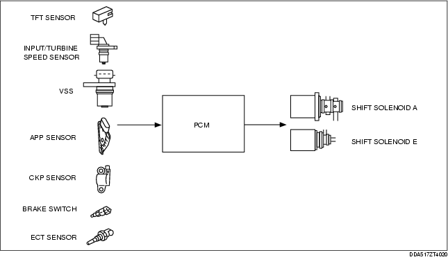

Torque converter clutch (TCC) control outline [FN4A-EL]
• The PCM selects and determines the TCC diagram based on the shift control results. With this TCC diagram, and according to the signals from VSS, TP sensor, and other switches and sensors, the PCM sends the signal to the duty-cycle type shift solenoids A and on/off type shift solenoid E to operate TCC control.
• Smooth TCC control, which engages the TCC gradually, has been adopted to reduce the shock when the TCC engages.
